Data Structures and Algorithms
with Object-Oriented Design Patterns in C++
Data Structures and Algorithms
with Object-Oriented Design Patterns in C++
The problem with binary search trees is that while
the average running times for search, insertion, and withdrawal
operations are all  ,
any one operation is still O(n) in the worst case.
This is so because we cannot say anything in general
about the shape of the tree.
,
any one operation is still O(n) in the worst case.
This is so because we cannot say anything in general
about the shape of the tree.
For example,
consider the two binary search trees shown Figure  .
Both trees contain the same set of keys.
The tree
.
Both trees contain the same set of keys.
The tree  is obtained by starting with an empty tree
and inserting the keys in the following order
is obtained by starting with an empty tree
and inserting the keys in the following order
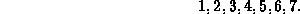
The tree  is obtained by starting with an empty tree
and inserting the keys in this order
is obtained by starting with an empty tree
and inserting the keys in this order
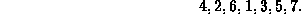
Clearly,  is a better tree search tree than
is a better tree search tree than  .
In fact, since
.
In fact, since  is a perfect binary tree ,
its height is 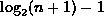.
Therefore, all three operations, search, insertion, and withdrawal,
have the same worst case asymptotic running time,
is a perfect binary tree ,
its height is 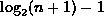.
Therefore, all three operations, search, insertion, and withdrawal,
have the same worst case asymptotic running time,  .
.
The reason that  is better than
is better than  is that
it is the more balanced tree.
If we could ensure that the search trees we construct are balanced
then the worst-case running time of search, insertion, and withdrawal,
could be made logarithmic rather than linear.
But under what conditions is a tree balanced?
is that
it is the more balanced tree.
If we could ensure that the search trees we construct are balanced
then the worst-case running time of search, insertion, and withdrawal,
could be made logarithmic rather than linear.
But under what conditions is a tree balanced?
If we say that a binary tree is balanced if the left and right
subtrees of every node have the same height,
then the only trees which are balanced are the perfect binary trees.
A perfect binary tree of height h has exactly  internal nodes.
Therefore, it is only possible to create perfect trees with n nodes
for 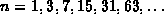.
Clearly, this is an unsuitable balance condition because
it is not possible to create a balanced tree for every n.
internal nodes.
Therefore, it is only possible to create perfect trees with n nodes
for 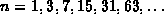.
Clearly, this is an unsuitable balance condition because
it is not possible to create a balanced tree for every n.
What are the characteristics of a good balance condition ?
 were the first to propose the following
balance condition and show that it has the desired characteristics.
were the first to propose the following
balance condition and show that it has the desired characteristics.
Definition (AVL Balance Condition) An empty binary tree is AVL balanced . A non-empty binary tree,, is AVL balanced if both
and
are AVL balanced and
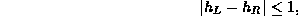
where 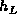 is the height of
Clearly, all perfect binary trees are AVL balanced. What is not so clear is that heights of all trees that satisfy the AVL balance condition are logarithmic in the number of internal nodes.
Theorem The height, h, of an AVL balanced tree with n internal nodes satisfies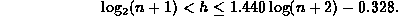
extbfProof
The lower bound follows directly from Theorem .
It is in fact true for all binary trees
regardless of whether they are AVL balanced.
To determine the upper bound, we turn the problem around and ask the question, what is the minimum number of internal nodes in an AVL balanced tree of height h?
Let 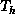 represent an AVL balanced tree of height h
which has the smallest possible number of internal nodes, say  .
Clearly, must have at least one subtree of height h-1 and that
subtree must be 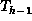.
To remain AVL balanced, the other subtree can have height h-1 or h-2.
Since we want the smallest number of internal nodes, it must be 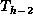.
Therefore, the number of internal nodes in is
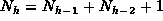, where 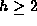.
.
Clearly, must have at least one subtree of height h-1 and that
subtree must be 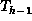.
To remain AVL balanced, the other subtree can have height h-1 or h-2.
Since we want the smallest number of internal nodes, it must be 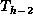.
Therefore, the number of internal nodes in is
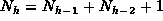, where 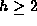.
Clearly,  contains a single internal node, so 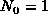.
Similarly,
contains a single internal node, so 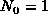.
Similarly,  contains exactly two nodes, so 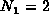.
Thus,
contains exactly two nodes, so 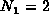.
Thus,  is given by the recurrence
is given by the recurrence
The remarkable thing about Equation
is its similarity with the definition
of Fibonacci numbers
(Equation ).
In fact, it can easily be shown by induction that
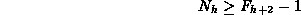
for all  , where 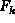 is the
, where 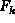 is the  Fibonacci number.
Fibonacci number.
Base Cases
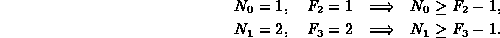
Inductive Hypothesis
Assume that 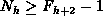 for  .
Then
.
Then
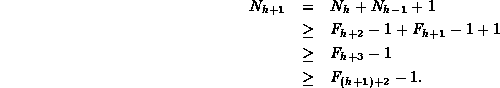
Therefore, by induction on k, , for all  .
.
According to Theorem ,
the Fibonacci numbers are given by
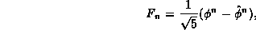
where  and
and  .
Furthermore, since
.
Furthermore, since  ,
,  .
.
Therefore,
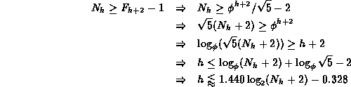
This completes the proof of the upper bound.
So, we have shown that the AVL balance condition satisfies the first criterion of a good balance condition--the height of an AVL balanced tree with n internal nodes is 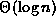. What remains to be shown is that the balance condition can be efficiently maintained. To see that it can, we need to look at an implementation.
 Copyright © 1997 by Bruno R. Preiss, P.Eng. All rights reserved.
Copyright © 1997 by Bruno R. Preiss, P.Eng. All rights reserved.